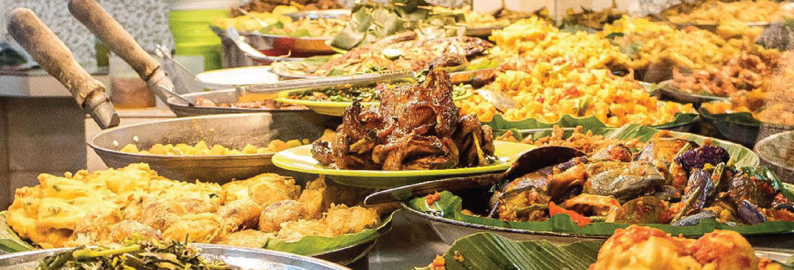
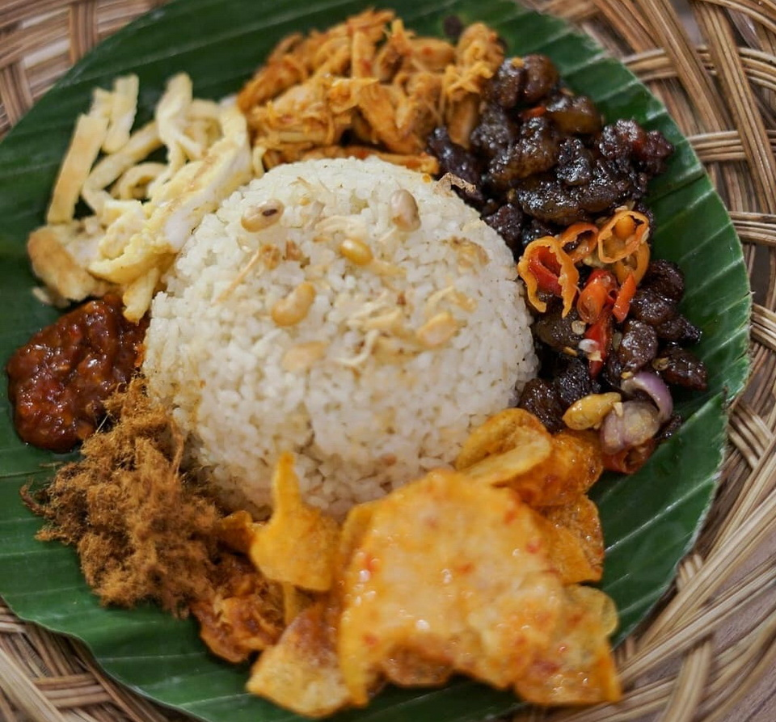

| Home | Menu | About | Store | ||
|---|---|---|---|---|---|
|  | |||||
WartOn Fitri adalah Warteg Online yang menyajikan beraneka ragam pilihan menu lauk pauk yang lezat dan enak secara online. Pilihan menu tentunya sangat ramah dikantong baik bagi anak kos maupun anak rantau. Mulai dari lauk yang mempunyai rasa manis, asin, gurih, bahkan pedas. Dengan beragamnya lauk pauk dengan rasa yang berbeda-beda inilah, santapan nasi dapat menjadi lebih beragam pula tergantung dari lauk pauk yang dipilih. Kira-kira terdapat hingga 20 lebih lauk pauk dari berbagai daerah yang ada di seluruh Indonesia bisa kamu jumpai di warteg kami. Mulai dari orek tempe, semur, aneka tumisan, aneka balado, sayur bening, hingga aneka gorengan seperti tempe goreng, bakwan jagung, tahu goreng, bakwan sayur, dan masih banyak lagi yang lainnya. |
 | ||||
| by Fitri Desiana Afani | Full Stack 01 | Universitas Trunojoyo | |||||